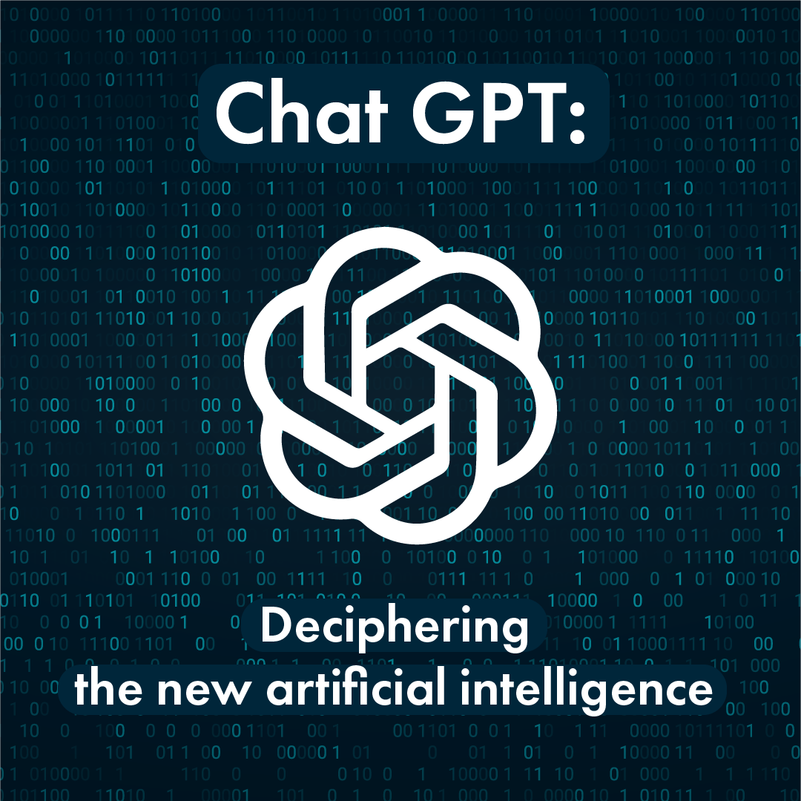

ChatGPT 1
ChatGPT-1 (Generative Pre-trained Transformer 1) is the first version of the GPT series of language models developed by OpenAI. It was released in 2018 and has 117 million parameters, which is considerably smaller than its successors, ChatGPT-2 and ChatGPT-3.
Read more
ChatGPT 2
ChatGPT-2 is an advanced language model developed by OpenAI, and it is the predecessor to the larger and more advanced ChatGPT-3 model. ChatGPT-2 was released in 2019 and has 1.5 billion parameters, quite large and allows it to generate high-quality response to a wide range of prompts.
Read more
ChatGPT 3

Sure, ChatGPT-3 is the latest version of the GPT series of language models developed by OpenAI. It is one of the largest and most advanced language models to date, with 175 billion parameters, which is over ten times the size of its predecessor, GPT-2.
Read more
ChatGPT 4
ChatGPT-4 is an AI-powered chatbot developed by OpenAI, a research organization dedicated to creating advanced artificial intelligence technologies.The GPT-4 model was trained on a massive amount of text data - as much as a rumored 100 trillion parameters.
Read more